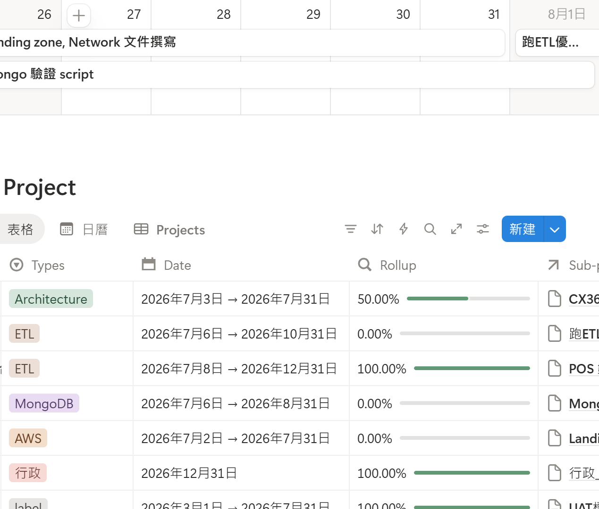
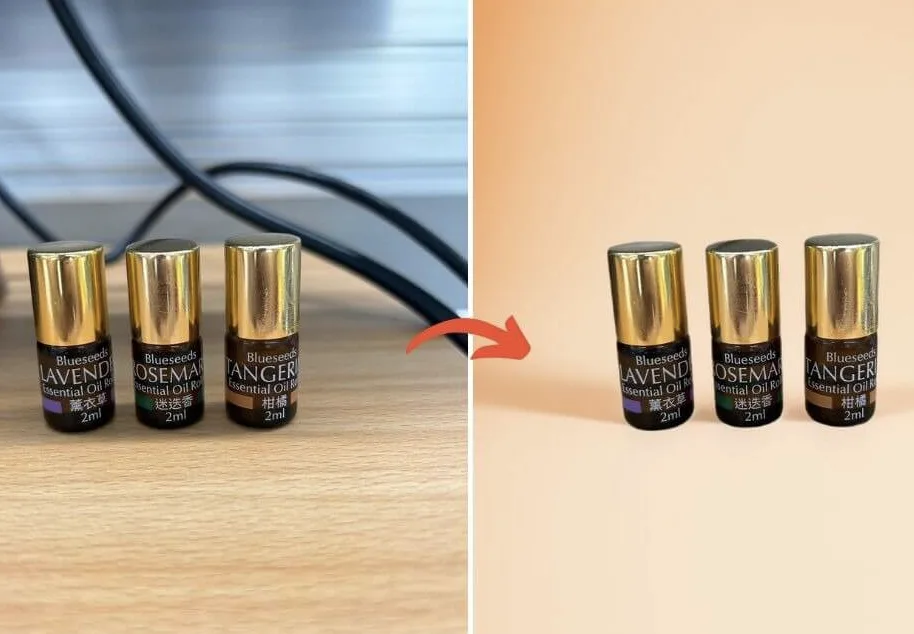

小商家客製網站
專為品牌打造，手機電腦都好看
Website · Automation · AI Data
量身打造網站、自動化與AI工具，幫你省下時間與成本。免費初步需求評估，先聊聊適不適合，再決定是否合作。
與我聊聊About
「把時間花在刀口上，讓工具真正幫你省力。」
Services

把重複的事交給機器
LINE Bot 範例 →
數位大腦，任務流程一目瞭然
數據分析案例 →
質感商品圖，省時省錢
影音資源 →Work Together
如果你已經有初步想法，可以先填表單，我會依照需求回覆你。
開啟 Google 表單
也可以直接來信約時間聊聊。